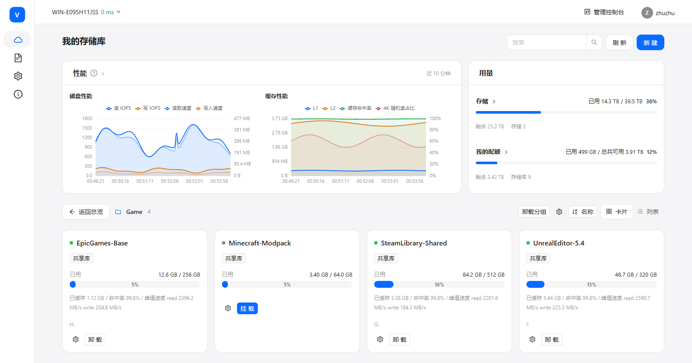
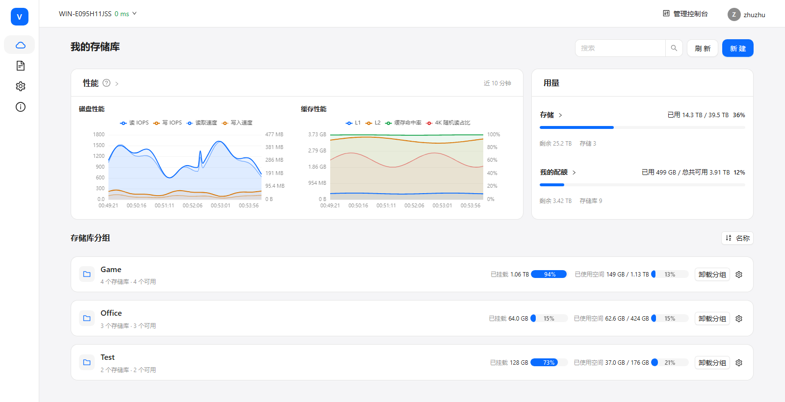
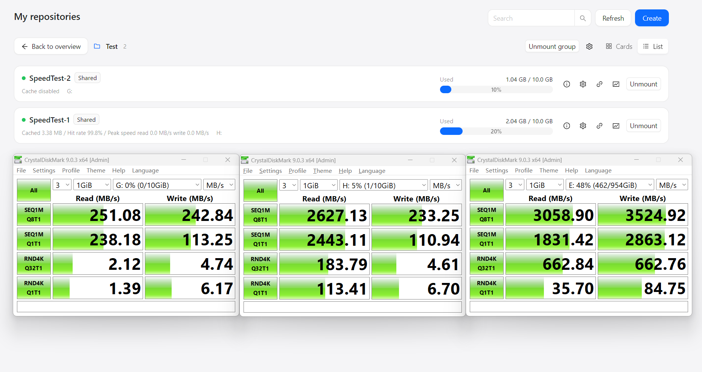
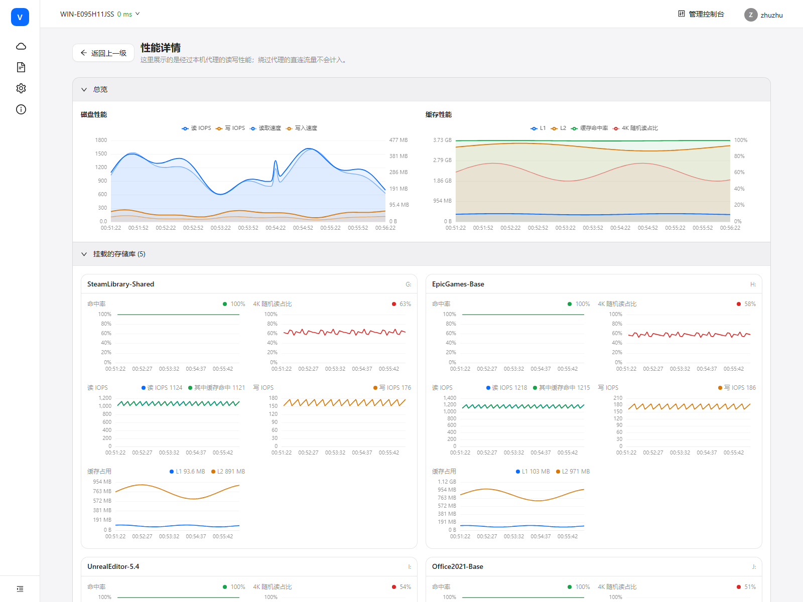
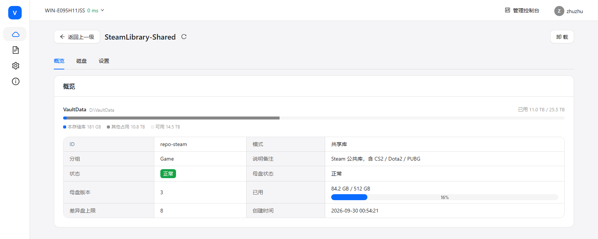
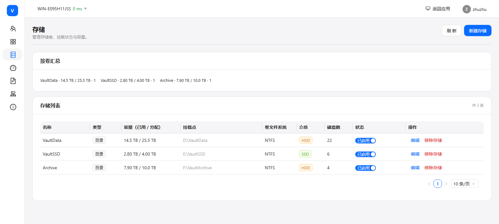
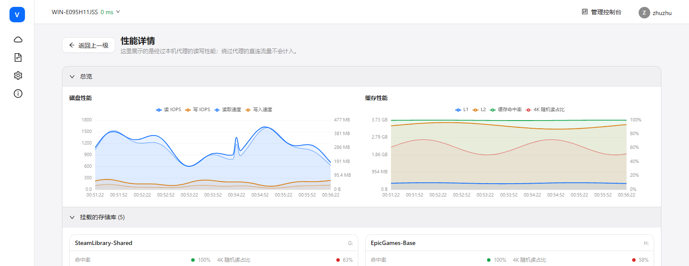
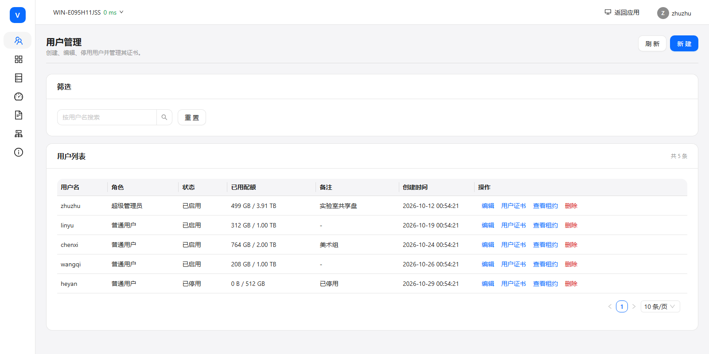

iSCSI 自动设置分配，端侧 iSCSI 旁路代理加速，支持 L1 内存、L2 本地存储加速； 重排缓存结构，随机读转为顺序读，优化读场景。


Performance

| 测试项 | 无缓存 | 开启缓存 |
|---|---|---|
| SEQ1M Q8T1 读 | 251.08 | 2627.13 |
| SEQ1M Q1T1 读 | 238.18 | 2443.11 |
| RND4K Q32T1 读 | 2.12 | 183.79 |
| RND4K Q1T1 读 | 1.39 | 113.41 |
| SEQ1M Q8T1 写 | 242.84 | 233.25 |
| RND4K Q32T1 写 | 4.74 | 4.61 |

性能页按库展开：命中率、4K 随机读占比、读/写 IOPS 和 L1/L2 占用都按库对齐。
Storage sharing
基础盘只存一份，每个用户一块独立盘。写入只落在自己的盘里，块级隔离； 新用户分配即用，释放后重置回池，基础盘更新一次全员生效。
每个独立盘对应一个 iSCSI target 和挂载点。
预创建独立盘池和 iSCSI 目标。
从池里直接占用，不现场建盘。
重置回池，下一位用户拿到干净盘。
维护态更新基础盘，退出后版本加一。


Bypass acceleration
不终止 iSCSI 会话。读命中由本机内存或 SSD 代答，不经过网络，也不读后端 HDD； 标准 iSCSI / CHAP 端到端保留，写始终直达后端。

代理在本地生成 Data-In，并修正 CmdSN / StatSN 偏移；命令不发给后端。
命令照常发给后端，代理旁路收集数据回填；不等待缓存，也不产生第二次后端读。
L1 内存用 S3-FIFO 淘汰；L2 是本地缓存文件，按 LBA 区域归位布局。
写失效缓存后原样转发，没有脏块和 writeback；代理不可用时回退直连。
Client & deploy
普通用户看到自己的存储库和挂载；超级管理员多一个管理台。服务端和客户端都在同一个仓库里构建。

管理台和用户端在同一个客户端里，存储库、用户、证书、租约和挂载不用分两套界面。
python build.py # 前端 + 服务端 + 客户端
python build.py --package-all # 服务端包 + 客户端安装包依赖 Go、Node.js、pnpm、Python，具体版本见仓库 README。
Vault-Server.exe -config .\config.yaml
sudo ./scripts/setup.sh
./vault-server doctor
./vault-server -config ./config.yamlLinux 服务端已支持，Linux 客户端还没实现。
写始终直达后端，不提供 writeback。
第一次读、冷数据和大顺序扫描仍走原来的链路。
多客户端同写同一 LUN 不在缓存一致性范围内。